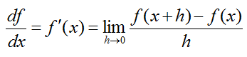
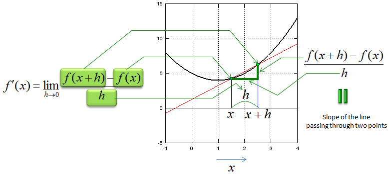
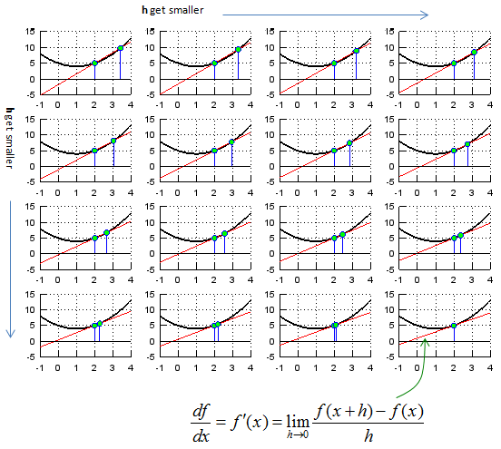
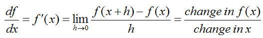
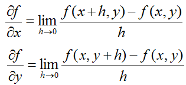
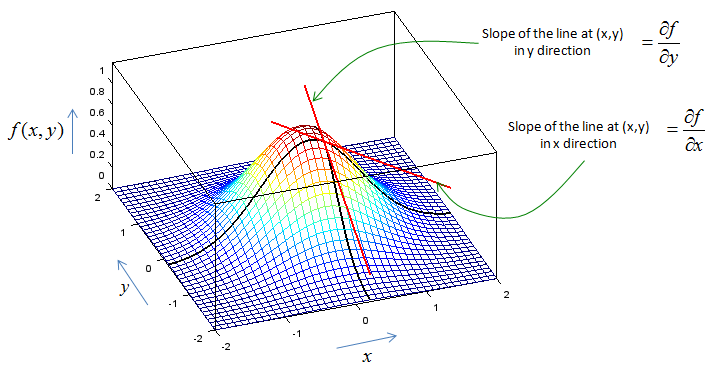

|
Calculus - Differentiation Home : www.sharetechnote.com |
|
Differentiation is a method to represent the rate at which one variable (dependant variable) changes with respect to the changes in another variable (independent variable). It is represened in mathematical form as shown below. What is your interpretation of this expression ? You know the meaning of limit, you know what f(x) mean and you know what f(x) mean. There is no component in this expression which you don't know about. How about the meaning of the whole expression ? Do you get it ?

One good way to figure out practical meaning of a mathematical concept is to represent it in graphical form as much as possible. Fortunately most of calculus concept for single variable can be represented in a form of graph or illustration.
First let's look at the following illustration that shows the meaning of each component of the expression. I don't think I need any further explanation and hope you can figure out the meaning of this illustration just by looking at it. If this is the first time you saw this kind of illustration, I would recommend you to copy this illustration and all the mathematical expression and arrows by hand. (If you want to create this kind of graph for other functions that you want try "Matlab/Octave Code I" appended at the end).

Now let's think of the meaning of "limit" in this expression. It says "h approaches to 0". It means "it get closer to 0". What would the graph look like when h gets closer to 0. You would get the meaning of this mathematical expression at the last graph shown below. (If you want to create this kind of graph for other functions that you want try "Matlab/Octave Code II" appended at the end).

Now let's look at the mathematical expressions for 'differentiation' again. I hope this make more sense to you by now.

What if we extend this concept to two variable function ? Mathematical expression for multivariable differentiation looks as follows.

It is not always easy to represent this multi variable differentiation in graphical form, but I picked a function so that I can graph it. It looks as shown below. (If you want to create this kind of graph for other functions that you want try "Matlab/Octave Code III" appended at the end. You should be a little bit careful about changing equations in the code. You should change the equations for three lines, lines for fxy, Zx, Zy. I admit that my code is not so wisely written. This is why you have to change the equation in multiple locations).

If you don't have any problem with what I described above and it is too simple for you, check if you can still understand the meaning of the differentiation when the function is a complex variable function or vector function. I would not come back this topic right away, but in real engineering you would see more of the case for complex function or vector functions. (I will come back to this topic, when I complete all the basic pages).
< Matlab/Octave Code I >
xmin = -1; xmax = 4; ymin = -5; ymax = 15;
x = xmin:0.1:xmax;
fx = @(x)[x .* (x .- 2) + 5];
x1 = 1.5; y1 = fx(x1); x2 = 2.5; y2 = fx(x2);
a = (y1-y2)/(x1-x2); b = (x1*y2-x2*y1)/(x1-x2); yd = a .* x + b;
hold on; plot(x,fx(x),'k-','Linewidth',2);axis([xmin xmax ymin ymax]); plot(x,yd,'r-');axis([xmin xmax ymin ymax]); stem([x1 x2],[y1 y2],'MarkerFaceColor',[0 1 0]); grid; hold off;
< Matlab/Octave Code II >
xmin = -1; xmax = 4; ymin = -5; ymax = 15;
x = xmin:0.1:xmax;
fx = @(x)[x .* (x .- 2) + 5];
x1 = 2.0; y1 = fx(x1); hmax = 1.5; hstep = hmax/16;
for i = 1:16,
x2 = x1 + hmax - i*hstep + 0.0001; y2 = fx(x2);
a = (y1-y2)/(x1-x2); b = (x1*y2-x2*y1)/(x1-x2); yd = a .* x + b;
subplot(4,4,i);
hold on; plot(x,fx(x),'k-','Linewidth',2);axis([xmin xmax ymin ymax]); plot(x,yd,'r-');axis([xmin xmax ymin ymax]); stem([x1 x2],[y1 y2],'MarkerFaceColor',[0 1 0]); grid; hold off;
end;
< Matlab/Octave Code III >
xmin = -2; xmax = 2; ymin = -2; ymax = 2;
x0 = 0.2; x1 = 0.20001; y0 = -0.2; y1 = -0.20001;
x = xmin:0.1:xmax; y = ymin:0.1:ymax; [X,Y] = meshgrid(x,y);
fxy = @(x,y)[exp(-(x.^2+y.^2))]; Z = fxy(X,Y);
Zx = exp(-(x.^2+y0.^2)); Zy = exp(-(x0.^2+y.^2));
zx0 = fxy(x0,y0); zx1 = fxy(x1,y0);
a = (zx0-zx1)/(x0-x1); b = (x0*zx1-x1*zx0)/(x0-x1); Zxd = a .* x + b;
zy0 = fxy(x0,y0); zy1 = fxy(x0,y1);
a = (zy0-zy1)/(y0-y1); b = (y0*zy1-y1*zy0)/(y0-y1); Zyd = a .* y + b;
hold on; mesh(X,Y,Z); plot3(x,y .* 0 .+ y0, Zx, 'linewidth',2,'color','k');axis([-2 2 -2 2 0 1.2]); plot3(x .* 0 .+ x0,y, Zy, 'linewidth',2,'color','k');axis([-2 2 -2 2 0 1.2]); plot3(x,y .* 0 .+ y0, Zxd, 'linewidth',2,'color','r');axis([-2 2 -2 2 0 1.2]); % slot at x0,y0 in x direction plot3(x .* 0 .+ x0,y, Zyd, 'linewidth',2,'color','r');axis([-2 2 -2 2 0 1.2]); % slot at x0,y0 in y direction view(-20,50); hold off;
|